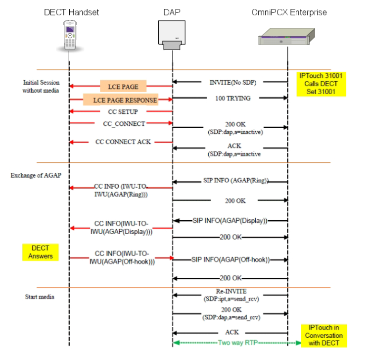
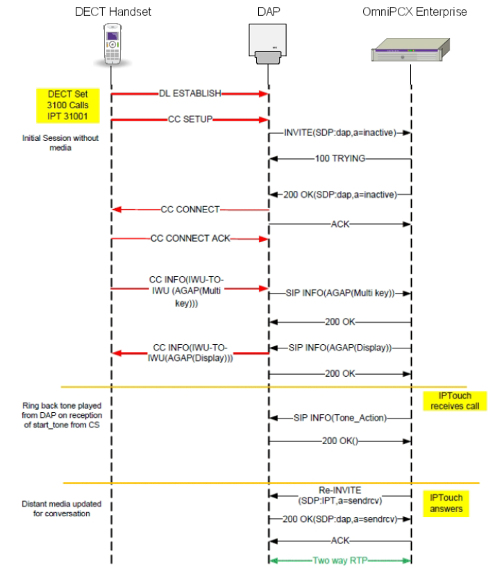
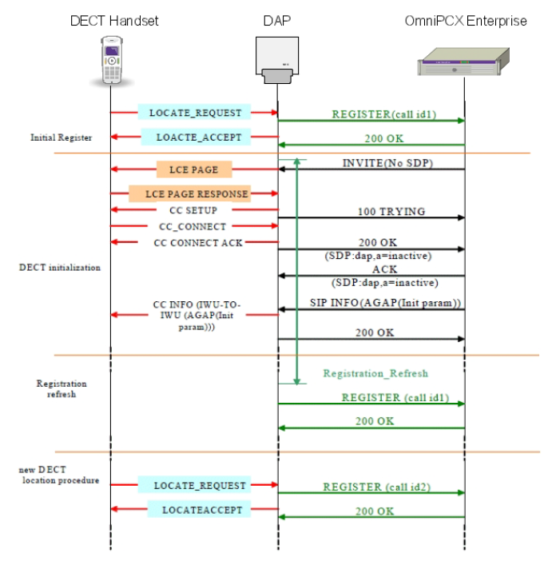
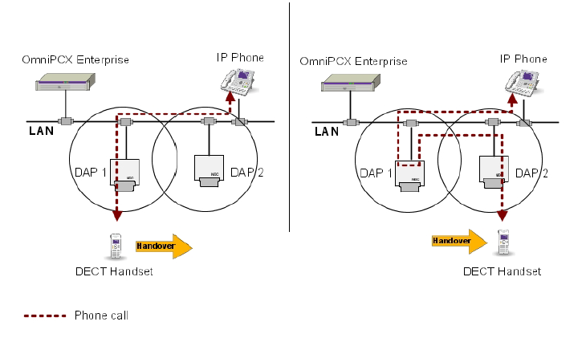

IP DECT - DAP Controller¶
Introducción¶
Las estaciones IP-DECT, están conectadas a la red IP y utilizan el protocolo SIP para comunicarse con OXE, los terminales, se conectan a la base con el protocolo DECT
Arquitectura¶
Es sistema IP-DECT, está basado en los siguientes componentes
DECT Access Point
DAP Controller
Terminales DECT
DECT Access Point¶
Los puntos de acceso DECT (DAP), están conectados a la red IP y proporcionan una interfaz DECT para manejar el registro y llamadas del terminal
Un DAP está diseñado para soportar
Hasta 11 llamadas simultáneas por DAP
Un máximo de 25 registros DECT por DAP
Cada teléfono DECT se registra en un DAP dedicado durante su fase de instalación, este, funcionará como DAP de registro para el teléfono DECT y garantiza el registro de los teléfonos DECT en OXE a través del protocolo SIP
DAP Controller¶
El controlador DAP, es un servicio web utilizado para configurar y controlar el sistema IP-DECT, permite asignar o reasignar teléfonos DECT a un DAP.
Cuando un DAP está inactivo, los teléfonos asignados a ese DAP ya no funcionan y el controlador DAP los reasigna a otro DAP
El controlador DAP, también es necesario cuando los teléfonos se mueven a otro sítio, el controlador, reasigna los teléfonos DECT a los DAP ubicados en el nuevo sitio
Nota
Solo un DAP controller es utilizado por un sistema IP-DECT al mismo tiempo
Terminales¶
El sistema IP-DECT, soporta
Los terminales ALU 300/400 DECT con protocolo AGAP (Alcatel GAP)
DECT 500 con protocolo GAP, se declaran como extensión SIP en la OXE
Señalización y flujo de voz¶
Una llamada desde o hacia un terminal DECT, requiere los siguientes flujos IP
Un flujo de señalización SIP entre el registro DAP del teléfono y OXE
Una multidifusión IP a todos los DAP cuando el terminal está conectado a un DAP distinto de su DAP de registro
Una conexión RTP para el flujo de voz entre el DAP al que está conectado el terminal y la otra persona que llama
Llamada de entrada/salida
La sesión SIP inicial, se establece sin negociación inmediata de SDP
La negociación SDP, se lleva a cabo durante una sesión SIP activa, cuando el terminal responde, OXE envía un RE-INVITE al DAP de registro con una oferta SDP
 Configuración de tonos
Los tonos son administrados por el sistema IP-DECT y reproducidos/pardos al recibir OXE los comandos START_TONE/STOP_TONE en tramas SIP INFO
Protocolos manejados pr el sistema IP-DECT¶
AGAP (Alcatel Generic Access Profile), protocolo propietario para terminales específicos Alcatel. Basado en el protocolo GAP, ofrece caracteristicas avanzadas a los terminales. Es encapsulado en tramas SIP INFO entre el DAP y la OXE
GAP (Generic Access Profile), protocolo que permite que los terminales DECT de diferentes fabricantes funcionen juntos
Registro de un terminal DECT en OXE¶
Para poder operar, un teléfono DECT, debe estar registrado en el sistema y asignado a un DAP.
El DAP de registro del terminal, envía una solicitud de registro (REGISTER) a OXE, dende se envía, el número de directorio del terminal y la dirección IP de su registro DAP.
El diálogo Keep-Alive entre DAP y OXE, se hace enviando solicitudes de registro SIP.
El registro SIP, también se usa cuando un terminal registrado se enciende o sale del área de cobertura de radio. Cuando esto ocurre, el DAP envía una solicitud de registro a OXE.
Al iniciar o reiniciar el sistema, todos los terminales DECT se registran al mismo tiempo. Si el servidor SIP, rechaza el registro, DAP hace un nuevo intento después de un retraso de 10 segundos.
Sincronización de la estación base¶
Las estaciones base DAP, requiere una sincronización estable y precisa para funcionar correctamente y proporcionar un traspaso contínuo (handover). La sincronización se transmite por el aire.
Cuando se inicia el sistema, el DAP con el RPN más pequeño, actúa como fuente de sincronización, este, trnasmite una señal en el aire a todos los demás DAP ubicados en su área de cobertura de radio. A su vez, estos, se convierten en fuente de sincronización para los DAP ubicados en su área de cobertura de radio.
Movilidad DECT¶
La función de roaming, permite a los usuarios de teléfonis DECT, hacer o recibir llamadas desde cualquier ubicación en el área de cobertura del sistema IP-DECT.
En una configuración de sitio único, el roaming, es adminsitrado por el sistema IP-DECT. La multidifusión IP, se usa para identificar el DAP en el que están registrados los terminales.
En sitios múltiples, es posible cuando el controlador DAP está en funcionamiento. Cuando un terminal DECT se mueve de un sitio a otro, el controlador DAP reasigna el terminal a un DAP ubicado en el nuevo sitio
La función handover, permite a los usuarios de terminales DECT, moverse de un DAP a otro durante la llamada, no hay interrupción de la llamada.
El handover, es manejado por el sistema IP-DECT.
Cuando un usuario en conversación, se mueve de un DAP a otro, la llamada, es redirigida como sigue:
Configuración de la red IP¶
El DAP controller, se encuentra en la sede principal y hay sedes remotas conectadas a la WAN
El roaming es compatible entre todas las sedes, siempre que el controlador DAP esté en funcionamiento
El handover, es compatible en la sede
Pasos para instalar la solución IP-DECT¶
Instalar DAP Controller en servidor OMNIVISTA
Configurar sede (RPNs y rangos IP)
Instalar antenas y registrarlas mediante DAP Manager
Dar de alta extensiones en OXE y DAP Manager
Registrar terminales
DAP Configuración¶
Configuración en la OXE¶
Declaramos el sistema IP-DECT
DECT System ->
IP Base Type = yes
# Añadimos la IP del DAP
SIP ->
Trusted ip address
# Declaramos los terminales DECT
Users ->
Set Type: GAP+ (para ALU 300/400 AGAP)
Set Type: SIP Etension (Dect en modo GAP)
# Configuramos parámetros de compresión
System ->
Other System Parameters ->
Compression Parameters ->
System Option ->
Compresion Type: G729
Multi Algorithms for compression: False
Nota
En OXE, los dominios IP, deben configurarse de tal manera, que todos los DAP que pertenezcan a una sede, se instalen en un dominio único.
El sistema DAP, debe configurarse con G.711 y G.729 en el DAP Controller
DAP Manager, acceso¶
Bien, desde la red de cliente, desde la red de gestión a través de port-forwarding o bien desde escritorio remoto, con el navegador
http://dir_omnivista:puerto_dap_manager/cds
Terminal 8232 Handset¶
Para registrar el terminal la primera vez
# Si el sistema utiliza Authentication code
Register
enter pin code (0000 por defecto)
Select a system (Se recomienda utilizar el primer sistema vacio)
Enter park code
Enter acceso code
Enter power mode
Nota
Poner el terminal en modo industrial
*7378423*
Comandos de mantenimiento¶
Enumera cada termnal DECT registrado, el número de equipo, el número de directorio, la dirección IP del DAP de registro y la versión de software
dectsets v
dectsets d dir_num
dectsets n equipo
Lista todos los dispositivos SIP declarados y su tipo
sipdect -ilv
sipdect -n dir_num
sipdect -u uri_name
Verifica que el demi-con del terminal DECT,se libere correctamente cuando el teléfono está bloqueado
demi-con n dir
demi-con n equipo
demi-con p crist-nb cpl-nb